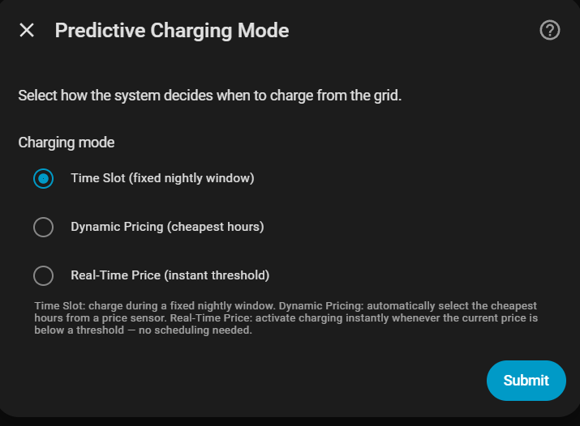
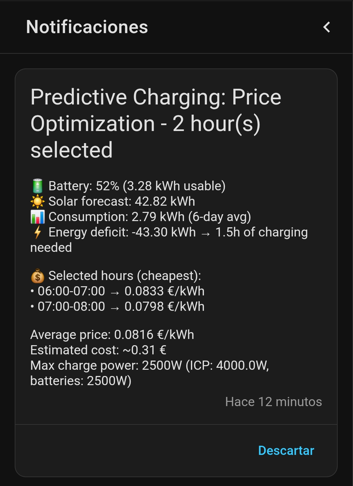

Predictive charging¶
Predictive charging is an optional feature that charges batteries from the grid when the expected energy balance for today is negative.
Decision logic¶
If (Usable battery + Solar forecast) < Expected consumption:
Charge from grid the exact deficit
Else:
Do not charge (cost saving)
- Usable battery: energy currently stored above the configured min SOC.
- Solar forecast: preferably the production remaining today (Solcast/Forecast.Solar sensor). Whole-day sensors remain a legacy fallback during the transition.
- Expected consumption: 7-day rolling average. See Daily consumption estimate.
Charge target¶
When charging is triggered, the integration does not charge all the way to max_soc from the grid. Instead it calculates a grid-only target SOC — enough to cover only what solar will not be able to provide during the day:
solar_surplus = max(0, solar_forecast − estimated_consumption)
grid_charge = max(0, gap_to_max − solar_surplus)
target_soc = current_soc + grid_charge / capacity × 100
gap_to_max is the kWh distance from the current SOC to max_soc. Solar output in excess of household demand charges the battery the rest of the way during the day.
Example: the battery needs 5 kWh to reach max_soc. Solar forecast is 13 kWh, expected consumption is 10 kWh — a surplus of 3 kWh available for the battery. The integration charges only 2 kWh from the grid; solar handles the remaining 3 kWh during the day.
Grid charge margin¶
The grid-charge calculation trusts the solar forecast. When the forecast is optimistic — or the weather turns out worse than predicted — solar may not deliver the expected surplus and the battery ends the day below max_soc. The optional Predictive Grid Charge Margin (%) hedges this by topping up the grid amount:
Continuing the example above, a 2 kWh grid need with a 50 % margin charges 3 kWh from the grid instead. The result is capped at gap_to_max, so the margin can never charge past max_soc. Default is 0 % (off); it also applies to the dynamic-pricing evening re-evaluation. Set it in the setup wizard, the options flow, or via the number.*_predictive_grid_charge_margin_pct slider on the dashboard Control tab.
Multi-battery systems¶
In systems with multiple batteries at different SOC levels the grid charge is distributed proportionally to each battery's individual gap to max_soc. A battery further from full receives a larger share; a battery already close to full relies mostly on solar for its remainder. This prevents overcharging any single unit from the grid and minimises total grid import.
Household demand during a charging slot¶
A predictive slot remains responsible for the batteries until the slot ends or its target is reached. Normal PD does not take over just because household demand increases: doing so could interpret grid import that still includes the previous battery charge as real household demand and immediately reverse the battery into an unnecessary discharge.
The import ceiling while predictive charging is active is:
Omnibattery reacts to increasing household demand in stages. The ceiling is the predictive PD's regulation target, not an immediate idle command:
- Reduce charging. Available grid headroom is given to the house first, so the battery charge command falls as household consumption rises.
- Keep a positive charge. If the PD calculation would mathematically cross
into discharge, the output is clamped to the battery's smallest effective
charge and the incremental PD state is preserved. A normal target overshoot
never commands
0 W. - Confirm a real emergency. Only a substantial physical excess over the hard limit, confirmed by three consecutive fresh publications, enters demand protection. An isolated spike or ordinary target overshoot keeps modulating positive charge.
- Protect the import limit if the emergency persists. The battery then waits for inverter response/readback latency and, if settled import remains above the limit, discharges only the confirmed excess. With Capacity Protection enabled this is Peak Shaving against its configured limit.
- Resume from available headroom. After two fresh samples show at least
max(200 W, 2 × PD deadband)of headroom, predictive charging resumes from a power calculated from that margin rather than from the battery maximum.
0 W is reserved for explicit blockers, BMS, unavailable batteries, critical
telemetry, the end of a slot, reached SOC, phase protection, or a confirmed
safety emergency.
Positive charge, Peak Shaving and normal PD are different
During a cheap predictive slot, an ordinary overshoot is corrected by
modulating positive charge; it does not enable a normal economic
discharge towards pd_target_grid_power. Peak Shaving or contracted-power
emergency control acts only after a safety excess is confirmed. Outside the
predictive slot, normal PD resumes and follows the configured grid target.
For example, with max_contracted_power = 2,000 W, Capacity Protection off and
a settled physical household load of 2,800 W, emergency protection requests
approximately 800 W of discharge. It aims to keep grid import near 2,000 W,
not 0 W. A short inrush that disappears while telemetry settles produces no
discharge.
Safety discharge may bypass only economic price/curtailment blocks. Minimum SOC, unavailable or manually owned batteries, backup/RS485 restrictions, per-battery limits, system limits and phase protection remain authoritative. Excluded-device policy may affect ordinary Peak Shaving, but contracted-power emergency protection always uses the physical import seen by the grid meter.
If the grid meter stops publishing, an existing protective command is not increased from the old reading. Once the reading exceeds the stale-data limit, the controller returns automatic batteries to idle and waits for fresh settled telemetry.
The charge target and undelivered energy remain attached to the predictive plan while charging is suspended. Dynamic Pricing attempts to move a missed quota to eligible future slots; Time Slot mode rebuilds its remaining-window plan from live SOC; Real-Time Price records the shortfall because it has no future price calendar. If no feasible future capacity exists, the remaining kWh are exposed as a shortfall rather than silently discarded.
See also Capacity protection and Main grid sensor.
Guaranteed minimum SOC floor¶
Predictive charging only grid-charges when the day nets to a deficit. On a sunny day the whole-day balance can be positive even though the battery is near empty at dawn — leaving the morning gap (before solar ramps up) covered from the grid at full price, or the battery drained.
The optional Guaranteed Minimum SOC slider (Control tab, 0 = off) reserves enough energy to keep each battery at that floor until effective solar production starts, regardless of the day's net balance. Dynamic Pricing chooses the cheapest eligible slots that can deliver the reserve before that deadline. The explicit maximum-price threshold and physical blockers remain authoritative, so an impossible guarantee is reported as a shortfall instead of being assigned to a later slot.
It re-triggers with hysteresis: once SOC recovers to the configured floor, charging stops if the floor was the only reason to charge; it re-arms when SOC drops to floor − 5 %. Set it via the number.*_predictive_min_soc_floor slider, paired with the Guaranteed Minimum SOC switch.
Consumption forecast source¶
The daily estimate is retained as a compatibility fallback, but mature
installations use the local 15-minute profile described in Daily and hourly
consumption estimate. Dynamic Pricing
and its intraday re-evaluations request only the remaining local-time horizon.
Predictive charging windows are not subtracted from household demand. The decision attributes identify the
source as profile or legacy_daily, together with profile coverage and the
number of learned days.
Available modes¶
| Mode | Description |
|---|---|
| Time Slot | Charges during a fixed window (e.g. overnight off-peak tariff) |
| Dynamic Pricing | Automatically selects the cheapest hours of the day |
| Real-Time Price | Activates/deactivates charging based on the current price |

Notifications¶
The integration sends Home Assistant notifications:
- 1 hour before the slot starts: energy balance analysis and charging decision.
- When the slot starts: confirmation that charging has begun.
- In Dynamic Pricing mode, the plan is also checked 1 hour before each future slot, once in the late afternoon/evening, and after a 30 percentage-point SOC drop.
Use the Override Predictive Charging switch to cancel predictive charging at any time.
Solar timeline and rollout mode¶
The forecast total and its temporal shape are separate contracts. The total comes from the configured forecast sensor; direct PV telemetry is used only to learn when that energy normally arrives. The timeline priority is:
- Valid dated periods explicitly supplied by the provider.
- A mature local profile learned from direct PV power and battery MPPT power.
- The existing sinusoidal daylight curve.
- A zero timeline when no safe daylight window exists.
Solar-timeline selection is automatic. While the learned profile is immature or
cannot cover the requested range, the integration uses the sinusoidal curve.
Once the profile is mature, it is applied automatically using the priority
above. Users do not need to select a rollout mode. Existing entries that stored
shadow are normalized to this behaviour; off is retained only as an
internal compatibility override.
The profile is normalized to sum to one before the forecast budget is applied. It does not predict kWh, repair a bad weather forecast, control the inverter or reconstruct energy lost to curtailment. A forecast safety margin is subtracted once from the remaining budget before shaping.
Useful decision attributes include solar_timeline_source,
solar_remaining_raw_kwh, solar_remaining_effective_kwh,
solar_timeline_fallback_reason, solar_profile_mature and
solar_profile_coverage_ratio.
